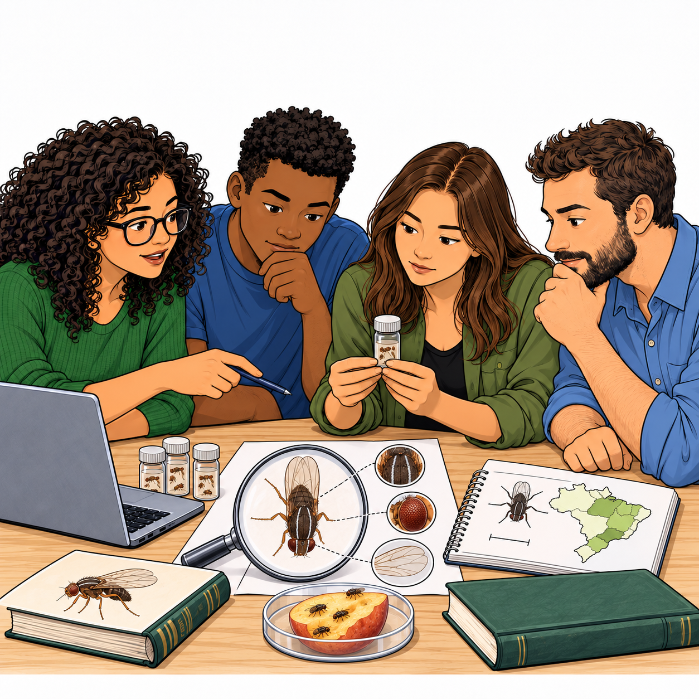

UM LIVRO DO CURSO SDM 2026
Da pergunta
ao artigo
Uma equipe, uma espécie e as decisões que transformam registros em conhecimento.
Acompanhe uma equipe desde os registros de campo até os mapas e o artigo. Pequenos trechos do script de Zaprionus tuberculatus explicam cada decisão, com a teoria necessária para compreendê-la.
Começar a leitura →
Visão geralD
DadosM
ModeloA
AvaliaçãoP
Predição
O campo, o código e as decisões
O estudo de caso acompanha Zaprionus tuberculatus. A leitura simula o trabalho da equipe com o script do curso: preparar o projeto, conferir entradas, executar os blocos e interpretar as saídas. A base conceitual foi atualizada com os slides de 6 de novembro de 2026.
As situações de campo são didáticas. Os trechos de código indicam sua origem e os objetos necessários; comandos compactados e conferências adicionais estão identificados. Execute o script completo na ordem. Os valores do estudo devem ser preenchidos com as saídas da sua execução.
O percurso
A pergunta nasce no campo
A equipe observa, registra e transforma uma dúvida em uma pergunta que o script pode investigar.
02 · O · OverviewO que a equipe pretende modelar
A teoria ajuda a interpretar o que os pontos e o mapa representam.
03 · O → D → M → A → PO caderno de decisões da pesquisa
A equipe registra as escolhas à medida que percorre o script.
04 · Preparação do projetoPreparar a bancada no RStudio
A equipe abre o script completo e executa os blocos na ordem, usando pequenos trechos para compreender cada etapa.
05 · D · DataDo caderno de campo à tabela de presenças
A equipe reúne os registros identificados, preserva sua procedência e complementa a planilha com o GBIF.
06 · D · DataConferir os pontos antes de modelar
A equipe inspeciona a posição e a procedência dos registros, acompanha exclusões e reduz redundância.
07 · D → M · preditoresAssociar cada ocorrência ao ambiente
A equipe extrai as condições ambientais e escolhe o conjunto que seguirá para os ajustes.
08 · M · ModelDefinir onde o modelo vai aprender
O domínio de calibração e os contrastes determinam quais ambientes serão comparados com as presenças.
09 · A · AssessmentPreparar treinamento e avaliação
A equipe constrói as partições espaciais e confere as amostras antes de comparar modelos.
10 · M · ModelAjustar as associações com o ambiente
A equipe configura os algoritmos do script e acompanha o que cada opção controla.
11 · A · AssessmentLer as métricas e conferir as respostas
A equipe interpreta os números em conjunto com as partições, os contrastes e as curvas do roteiro.
12 · A → P · leitura das saídasA primeira reunião de resultados
A equipe organiza os produtos gerados e compara o que cada um permite concluir.
13 · D ↔ M ↔ ARever uma decisão por vez
A equipe usa os diagnósticos para ajustar opções existentes no script e comparar as saídas.
14 · P · PredictionAplicar o modelo no presente e no futuro
A equipe usa o ajuste final, confere as entradas e acompanha os cenários previstos no roteiro.
15 · Execução e organizaçãoExecutar e retomar o roteiro
A equipe organiza a sessão, preserva os ajustes e encontra as saídas da tentativa realizada.
16 · Comunicação · IMReDOrganizar as evidências para o artigo
A equipe reúne a pergunta, as decisões do roteiro e as saídas que sustentam cada afirmação.
17 · ConsultaGlossário
Termos utilizados na simulação do roteiro, organizados em ordem alfabética.
18 · ConsultaLicença
19 · ConsultaReferências
Publicações dos slides, artigos com Amaro entre os autores e recursos do curso.
Materiais de trabalho
Registro ODMAP · Registro de refinamentos · Roteiro de artigo · Campos da planilha · Referências
A organização de leitura foi inspirada em Análises Ecológicas no R. Esta adaptação tem texto, narrativa e projeto visual próprios.